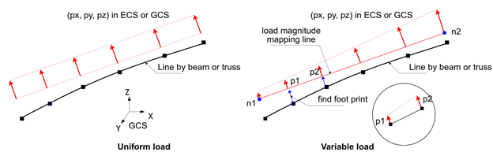
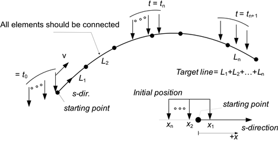
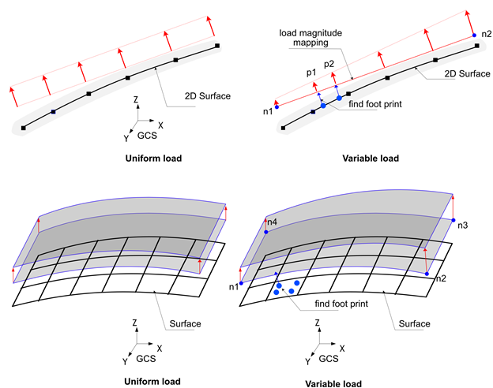
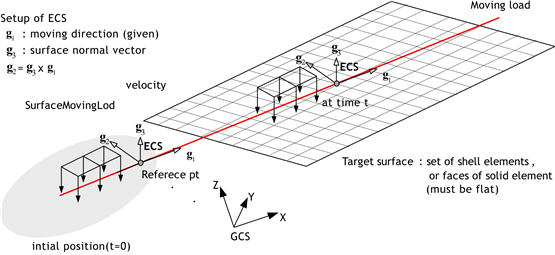
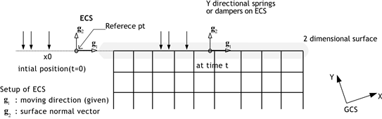
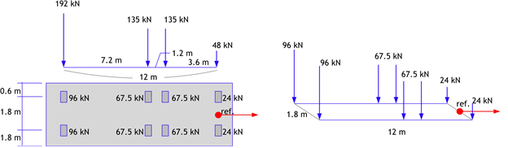
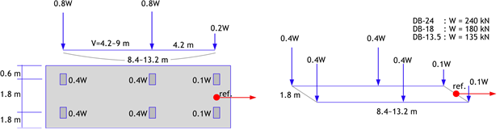
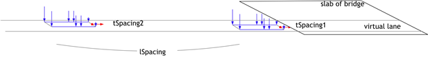

6. 하중
하중은 *Load로 지정한다. 자신만의 이름을 가지며 이름은 중복하여 지정할 수 없다. *Load는 해석단계내에서 어떤 하중 값을 주어진다는 점에서 *Constraint와 구분된다. 예를 들어 변위하중(Displacement)는 *Load이지만, 변위가 0인 경계조건(Support)은 *Constraint이다.
하중은 정적 또는 동적(시간의존)으로 가력될 수 있다. 예를 들어 *Load, TYPE=Concentric, *Load, TYPE=Displacement, *Load TYPE=Gravity, *Load, TYPE=Temperature, *Load, TYPE=LineDistributed, *Load, TYPE=SurfaceDistributed은 그 크기만을 지정하면 정적 가력 하중이만, 시간함수를 같이 지정하면 동적가력하중이 된다. 반면 *Load, TYPE=LineMoving, *Load, TYPE=SurfaceMoving, *Load, TYPE=PederianMoving, *Load, TYPE=Earthquake 등은 정적으로 가력할 수 없고 항상 시간에 의존하는 하중이다.
하중이 해석단계(*Step)에 적용될 때 세가지 상태(Created, Propagated, Faded)가 가능하다. Created는 현 해석단계에서 생성되었다는 것을, Propagated는 이전 해석단계에서 생성되고 현 해석단계에서 유지됨음, Faded는 현 해석단계에서 없어짐을 의미한다. 하중이 정적하중/동적하중 여부, 해석단계가 물리적인 시간에 의존하느나에 따라 하중의 상태와 하중이 작용하는 방식이 다르게 된다.
▪ 시간 의존 해석 단계
- 준정적해석(
*Step, TYPE=Static, Quasi)과 동해석(*Step, TYPE=Dynamic)이 있음. - Create, Propagated 상태만 가능하고 두 상태에서 작동방식이 동일
- Faded 상태는 존재할 수 없음(하중을 비활성화하는 순간 즉시 삭제)
- 정적가력하중은 해석단계내 시간변화와 무관하게 주어진 크기만큼 가력된다.
- 동적가력하중은 해석단계에서 정의되는 시간에 따라 가력된다.
▪ 정적해석 단계
- 정적해석(
*Step, TYPE=Static,*Step, TYPE=Static, Arclength)을 이미하며 하중계수의 크기에 따라 하중 가력 - 정적가력하중은 Created 인 경우 하중계수의 크기에 따라 하중이 가력된다.
- 동적가력하중은 Created 인 경우 하중이 가력되지 않음(물리적인 시간 흐름이 없으므로)
- Propagated인 경우 이전 단계의 최종 하중이 유지된다.
- Faded이 경우 이전 단계의 최종 하중이 현 해석이 끝날 때 0이되도록 크기가 감소한다.
- 온도하중(
*Load, TYPE=Temperature)은*Load, TYPE=Static,Arclength에서 Create나 Faded 상태가 될 수 없다.
*Load
Define lod
*Load, Type=load_type, Name=load_name, ...
...
Keyword line
- Type=type: 하중의 종류
- Concentric: 절점에 가력되는 집중하중
- Displacement: 0이 아닌 값을 가지는 변위하중
- SeismicRelative: 상대운동 정식화를 사용하는 지진가속도 이력 하중
- Gravity: 중력가속도에 의한 자중
- Temperature: 요소에 작용하는 온도변화로 인한 하중
- LineDistributed: 보 요소 또는 트러스 요소로 구성된 라인에 작용하는 분포하중
- LineMoving: 보 요소 또는 트러스 요소로 구성된 라인에 작용하는 이동하중
- SurfaceDistributed: 요소의 면으로 구성된 면에 작용하는 분포 하중
- SurfaceMoving: 요소의 면으로 구성된 면에 작용하는 이동 하중
- PedestrianMoving: 요소의 면으로 구성된 면에 작용하는 도보 하중
- Name=load_name: 하중의 이름
*Load, Type=Concentric
절점에 가력되는 집중하중
*Load, Type=Concentric, Name=name, Func=timeFunction
targetNode, oneDof, value, fnIdx, CS=orientation
targetNset, oneDof, value, fnIdx, CS=orientation
targetSurface, oneDof, value, fnIdx, CS=orientation
...
Keyword line
- Func=timeFunction : 시간의존해석(
*Step, Type=Static, Quasi와*Step, Type=Dynamic)시 사용할 시간 함수(optional).
First dataline and subsequent datalines
- targetNode: target node (required)
- targetNset: target nset(required). 절점집합내 절점이 대상이 됨.
- targetSurface: target surface(required). Surface내의 절점이 대상이 됨.
- oneDof: 대상이 되는 DOF. DOF는 X, Y, Z, RX, RY, RZ, P 등이 될 수 있다. X|Y 등과 같은 조합은 불가.(required)
- value: value(required)
- fnIdx: timeFunction 내의 적용하는 시계열 함수 인덱스(1-based index) (optional, default는 1).
- CS=orientation: 집중하중이 적용될 좌표계.
*CoordinateSystem, TYPE=Orientation으로 정의된 이름을 지정. 생략 시 GCS 적용 (optional)
데이터라인의 첫항은 targetNset, targetSurface, targetNode의 순으로 가능한 대상을 찾는다. 문자열로 제공하는 nset과 surface는 문자열로 지정되므로 이름을 정의할 때 주의한다. 또한 중복해서 특정 절점 자유도를 지정한 경우 오류없이 적용된다. 즉 그 자유도의 하중은 합산하여 적용된다.
국부좌표계를 지정하면, 주어진 좌표계를 기준으로 하중을 가력한다. 내부적으로 주어진 입력값 하중은 변환하여 GCS 상에서 가력된다. 해석 결과는 GCS 기준이다. 만약 주어진 국부좌표계를 기준으로 결과가 필요한 경우 *Print, *History에서는 별도로 지정해야 한다. *Output에서는 국부좌표계를 지정할 기능을 없으나 hfVisualizer로 포스트프로세싱시 국부좌표계상의 결과를 구할 수 있다.
Example
*Load, Type=Concentric, Name=A
1001, X, 10.
*Funtion, TYPE=MultiLinear, Name=Cyclic
0, 0
1, 1
2, 0
3, 1
4, 0
*Load, Type=Concentric, Name=B, Func=Cyclic
base, X, 10.
*Funtion, TYPE=TimeSignal, Name=timeLoad
0.02, 1024 # dt, ntime
elcenX.dat, 1, 3.01
elcenYZ.dat, 2, 3.01
*Load, Type=Concentric, Name=TimeLoading, Func=timeLoad
101, X, 1, 1
101, Y, 1, 2
101, Z, 1, 3
*CoordinateSystem, TYPE=Orientation, Name=inc
1,1,0, 0,1,0
*Load, Type=Displacement Name=InclinedLoad
101, X, 1. CS=inc
*Load, Type=Displacement
0이 아닌 값을 가지는 변위하중
*Load, Type=Displacement, Name=name, Func=timeFunction
targetNode, oneDof, value, {fnIdxD, fnIdxV, fnIdxA}|D=fnIdxD|V=fnIndxV|A=fnIndxA, CS=orientation
targetNset, oneDof, value, {fnIdxD, fnIdxV, fnIdxA}|D=fnIdxD|V=fnIndxV|A=fnIndxA, CS=orientation
targetSurface, oneDof, value, {fnIdxD, fnIdxV, fnIdxA}|D=fnIdxD|V=fnIndxV|A=fnIndxA, CS=orientation
...
Keyword line
- Func=timeFunction: 시간의존해석(
*Step, Type=Static, Quasi와*Step, Type=Dynamic)시 사용할 시간 함수(optional).
First dataline and subsequent datalines
- targetNode: target node (required)
- targetNset: target nset(required). 절점집합내 절점이 대상이 됨.
- targetSurface: target surface(required). Surface내의 절점이 대상이 됨.
- oneDof: 대상이 되는 DOF. DOF는 X, Y, Z, RX, RY, RZ, P 등이 될 수 있다. X|Y 등과 같은 조합은 불가.(required)
- value: value(required)
- fnIdxD, fnIdxV, fnIdxA: 변위 , 속도, 가속도 시간 함수의 timeFunction 내의 시계열 함수 인덱스(1-based index) (optional, default는 1). 만약 0을 지정하면 대응하는 이력값이 항상 0으로 취급.
*Step, Type=Static, Quasi에서는 변위를,*Step, Type=Dynamic에서는 변위, 속도, 가속도를 사용 - A=fnIdxA: timeFunction 내의 가속도 시간 함수의 인덱스(1-based index). 속도 및 변위 함수는 자동적분. timeFunction은
*Function, TYPE=TimeSignal이어야 함. - V=fnIdxV: timeFunction 내의 속도 시간 함수의 인덱스(1-based index). 가속도 및 변위 함수는 자동 미분 및 자동적분. timeFunction은
*Function, TYPE=TimeSignal이어야 함. - D=fnIdxD: timeFunction 내의 변위 시간 함수의 인덱스(1-based index). 속도 및 가속도 함수는 자동미동.timeFunction은
*Function, TYPE=TimeSignal이어야 함. - CS=orientation: 변위하중이 적용될 좌표계.
*CoordinateSystem, TYPE=Orientation으로 정의된 이름을 지정. 생략 시 GCS 적용 (optional)
데이터라인의 첫항은 targetNset, targetSurface, targetNode의 순으로 가능한 대상을 찾는다. 문자열로 제공하는 nset과 surface는 문자열로 지정되므로 이름을 정의할 때 주의한다. 또한 중복해서 특정 절점 자유도를 지정한 경우 변위 크기가 같으면 잘못된 해석 결과를 도출할 수 있다.
A=fnIdxA, V=fnIdxV, D=fnIdxD 등을 통해 미분, 적분한 시간이력은 name-generated.csv에 출력된다.
국부좌표계를 지정하면, 주어진 좌표계를 기준으로 변위를 가력한다. 내부적으로 MPC(multi-point constraint)가 부가되는 방식으로 처리된다. 해석 결과는 GCS 기준이다. 만약 주어진 국부좌표계를 기준으로 결과가 필요한 경우 *Print, *History에서는 별도로 지정해야 한다. *Output에서는 국부좌표계를 지정할 기능을 없으나 hfVisualizer로 포스트프로세싱시 국부좌표계상의 결과를 구할 수 있다.
Example
*Load, Type=Displacement Name=A
1001, X, 10.
*Load, Type=Displacement, Name=C
101, X, 100
101, X, 200 # Rasing error
*Funtion, TYPE=MultiLinear, Name=Cyclic
0, 0
1, 1
2, 0
3, 1
4, 0
*Load, Type=Displacement Name=B, Func=Cyclic
base, X, 10.
*Funtion, TYPE=TimeSignal, Name=motion
0.02, 1024 # dt, ntime
elcenD.dat, 1, 3.01
elcenVA.dat, 2, 3.01
*Load, Type=Displacement Name=B Func=motion
base, X, 1, 1, 2, 3
*Load, Type=Displacement Name=B Func=motionB
baseB, X, 1, A=1 # V, D is generated
*CoordinateSystem, TYPE=Orientation, Name=inc
1,1,0, 0,1,0
*Load, Type=Displacement Name=InclinedLoad
101, X, 0.1, CS=inc
*Load, Type=SeismicRelative
상대운동 정식화를 사용하는 지진가속도 이력 하중
*Load, Type=SeismicRelative, Name=name, Func=timeFunction
x, y, z, fnIdx
...
Keyword line
- Func=timeFunction: 지진가속도 이력(required)
First dataline and subsequent datalines
- x,y,z: directional vector of applying acceleration history. 입력된 벡터는 크기 1로 정규화됨.
- fnIdx: timeFunction 내의 적용하는 시계열 함수 인덱스(1-based index) (optional, default는 1).
*Load, Type=SeismicRelative는 동적해석에서만 사용가능하며, 계산된 응답은 입력된 지반운동에 대한 상대운동이다. 전체운동으로 주어진 지지점에 운동을 가력하는 *Load, TYPE=Displacement와는 계산되는 응답이 상대응답이라는 점에 주의해야 한다.
*Load, TYPE=SeismicRelative에서는 외력이 다음과 같이 작용한다.
Acoustic solid 요소가 사용된 모델에서도 적용가능하며 이때는 다음과 같다.
Example
*Function Type=TimeSignal Name=acc1d
0.02, 2670
BaseMotionX.inp, 1, 1 # file, nseries, scalFactor
*Load, Type=SeismicRelative, Name=Earthquake1D, Func=acc1d
1,0,0
*Function Type=TimeSignal Name=acc3d
0.02, 2670
BaseMotionX.inp, 1, 1 # file, nseries, scalFactor
BaseMotionY.inp, 1, 1 # file, nseries, scalFactor
BaseMotionZ.inp, 1, 1 # file, nseries, scalFactor
*Load, Type=SeismicRelative, Name=Earthquake3D, Func=acc3d
1,0,0,1
0,1,0,2
0,0,1,3
*Load, Type=Gravity
중력가속도에 의한 자중
*Load, Type=Gravity Name=name Func=timeFunction
targetElset, gx, gy, gz, fnIdx
...
Keyword line
- Func=timeFunction: 시간의존해석(Step, Type=Static, Quasi와 Step, Type=Dynamic)시 사용할 시간 함수(optional). 함수가 여러 계열(series)을 가지는 경우 첫 번째 계열이 사용.
First dataline and subsequent datalines
- targetElset: target elset(required)
- gx, gy, gz: Gravity Vector(optional, default 0,0,0)
- fnIdx: timeFunction 내의 적용하는 시계열 함수 인덱스(1-based index) (optional, default는 1).
Gravity Load가 활성화되기 위해서는 적용되는 요소의 물성치로 질량이 주어져 있어야 한다.
Example
*Load, Type=Gravity Name=SelfWeight
Slab, 0. 0. -9.81
Girder, 0. 0. -9.81
*Load, Type=Temperature
요소에 작용하는 온도변화로 인한 하중
*Load, Type=Temperature, Name=name Func=timeFunction
targetElset, T, Ty, Tz, fnIdx
...
Keyword line
- Func=timeFunction: 시간의존해석(Step, Type=Static, Quasi와 Step, Type=Dynamic)시 사용할 시간 함수(optional). 함수가 여러 계열(series)을 가지는 경우 첫 번째 계열이 사용.
First dataline and subsequent datalines
- targetElset: target elset(required)
- T, Ty, Tz: temperature and temperature gradient change(optional, default 0,0,0)
- fnIdx: timeFunction 내의 적용하는 시계열 함수 인덱스(1-based index) (optional, default는 1).
요소에 동일한 온도변화(uniform temperature change)가 가해질 때 사용
▪ 주의
- 온도하중은 Step, TYPE=Static,Arclength에서는 Activate 또는 *Inactivate 될수 없다. 다만 이전 해석에 가력된 후 그 크기가 유지되는 것은 가능하다. 즉, Created, Faded 단계가 불가능하고 Propagated 상태만 가능하다.
Example
*Load, Type=Temperature Name=A
beam, 10.
*Load, Type=LineDistributed
보 요소 또는 트러스 요소로 구성된 라인에 작용하는 분포하중
*Load, Type=LineDistributed, Name=name, Func=timeFunction
line, GCS|ECS, px, py, pz, mx, my, mz, fnIdx
line, GCS|ECS, n1, n2, px1, py1, pz1, mx1, my1, mz1, px2, py2, pz2, mx2, my2, mz2, fnIdx
...
Keyword line
- Func=timeFunction: 시간의존해석(Step, Type=Static, Quasi와 Step, Type=Dynamic)시 사용할 시간 함수(optional). 함수가 여러 계열(series)을 가지는 경우 첫 번째 계열이 사용.
First dataline and subsequent datalines
- line: 보 요소 또는 트러스 요소로 구성된 요소집합(required)
- GCS|ECS: 주어진 하중의 좌표계
- px, py, pz, mx, my, mz: 등분포 분포 하중(px,py,pz는 직교 방향 하중, mx,my,mz는 모멘트). 2차원 보에서는 px, py, mz, 트러스요소에서는 px를 제외한 나머지 성분은 무시함.
- n1, n2, px1, ..., mz2: n1, n2 절점에 각각 px1~mz1과 px2~mz2 크기의 분포하중을 가력하고, 그 사이는 두 점을 잇는 형상함수로 보간.
- fnIdx: timeFunction 내의 적용하는 시계열 함수 인덱스(1-based index) (optional, default는 1).
라인은 보 요소 또는 트러스 요소만으로 이루어져 하며(두 요소를 섞을 수 없음), 연결된 선일 필요는 없다. 트러스 요소는 ECS 상에서 축방향을 제외한 나머지 두방향을 정의할 수 없으므로 ECS 옵션은 무시된다.
하중을 사다리꼴 형태로 가력하는 경우는 그림과 같이 각 선분의 요소의 절점에서의 하중 크기가 n1, n2 절점을 잇는 선분으로 매핑되어 그 값을 찾는다.

Fig. 6.2-1. Line Distributed Load
Example
*Load, Type=LineDistributed, Name=Load1
side1, GCS, 0.,10.,1.
*Load, Type=LineDistributed Name=Load2
side1, ECS, 1, 2, 10.,0.,0.,0,0,0, 20.,0.,0. 0,0,0
*Load, Type=LineDistributed,ECS Name=Load3
side1, ECS, 10.
side2, ECS, 0.,10.,1.,0,0,0
side3, ECS, 1, 2, 10.,0.,0.,0,0,0,20.,0.,0.,0,0,0
*Load, Type=LineMoving
보 요소 또는 트러스 요소로 구성된 라인에 작용하는 이동하중
# Direct form : 하중을 직접 정의하는 경우
*Load, Type=LineMoving, Name=name
speed, line1, line2, direction, s0, y0, z0
s, y, z, Px, Py, Pz, Mx, My, Mz
...
# KL-510 form : 설계기준에 따라 KL-510 하중을 생성하는 경우
*Load, Type=LineMoving, Name=name
speed, line1, line2, direction, s0, y0, z0
KL-510, unit, ax, ay, az{, ToDirectForm}
lSpacing, tSpacing1, tSpacing2, ...
# DB-24, DB-18, DB-13.5 form : 설계기준에 따라 DB-24, DB-18, DB-13.5 하중을 생성하는 경우
*Load, Type=LineMoving, Name=name
speed, line1, line2, direction, s0, y0, z0
DB-24|DB-18|DB-13.5, unit, ax, ay, az{, ToDirectForm}
lSpacing, tSpacing1, tSpacing2, ...
aSpacing1, aSpacing2, ...
First dataline
- speed: speed (required)
- line1, line2: 보 요소 또는 트러스 요소로 구성된 요소집합(line1은 필수이고 line2는 옵션). Direct form에서만 line2가 존재할 수 있음
- direction: 이동하중의 진행방향. forward 또는 backward. 디폴트는 forward
- s0: 기준점을 정의하는 거리. 대상 보/트러스 요소집합의 시작점으로 거리로 정의됨. 디폴트는 0.
- y0, z0: 보요소 ECS에서 단면내 offset의 기초값. 디폴트는 0.
Second dataline and subsequent lines for Direct form
- s: 기준점으로부터의 거리(required). 대상 보/트러스 요소집합의 시작점을 기준으로 s0+s 거리에 하중이 가력
- y, z: 보요소 ECS에서 단면내 추가 offset(required). 단면내 offset은 y+y0, z+z0로 계산됨
- Px,Py,Pz,Mx,My,Mz: 전체좌표계상의 하중벡터, 라인세그먼트가 보가 아닌 경우 Mx, My, Mz는 무시된다.(optional, but greator than one term should be given. default 0,0,0,0,0,0).
Second dataline for KL-510, DB-24, DB-18, DB-13.5 form
- unit: 입력파일에 작성에 사용한 단위, N-m 등과 같이 force-length 형태로 지정함.
- ax, ay, az: GCS상의 축하중의 작용 방향 벡터. 단위벡터가 아닌 경우 정규화된다. 예를 들어 (0,0,-1)이면 중력 반대방향
- ToDirectForm: 지정하는 경우 direct form으로 변환하여 저장함.
Third dataline for KL-510, DB-24, DB-18, DB-13.5 form
- lSpacing: 여러개의 횡방향 이격거리를 지정할 때, 개별 차량 하중이 차량진행방향으로 이격된 거리
- tSpacing1, tSpacing2, ...: 횡방향 이격거리. 1개 이상의 이격거리를 지정해야 하며, 각 이격거리를 갖는 개별 차량 하중이 lSpacing 만큼 뒤에 추가로 생성됨.
Fourth dataline for DB-24, DB-18, DB-13.5
- aSpacing1, aSpacing2, ...: 마지막 축간 거리, 1개 이상의 지정해야 하며 4.2-9.0m 사이의 값이어야 한다. 지정한 축간거리의 개수만큼 이동하중을 lSpacing, tSpacing1, tSpacing2, ...을 고려하여 추가한다.
LineMoving 하중은 보 요소로 구성된 라인이나 트러스 요소로 구성된 라인(line)을 지나는 이동하중을 지정한다. Direct form과 generation form 등 크게 두가지 형태의 폼으로 정의할 수 있다. Direct form은 사용자가 이동하중을 구성하는 축중을 직접 지정하는 방식이고, KL-510, DB-24 등과 같은 generation form은 설계기준에 만즌 이동하중을 생성한다.
LineMoving 이동하중은 주어진 속도로 하중 위치를 변경시킨다. 동해석(*Step, Type=Dynamic) 또는 시간의존 정해석(*Step, Type=Static,Quasi)인 경우 속도에 따라 위치를 변경하고, 나머지 해석 조건에서는 그 위치를 변경시키니 않느다(일반 정해석에서는 이동이 없음). 라인은 보요소로만 이루어지거나 트러스 요소만으로 이루어져하고(두 요소를 섞을 수 없음), 하나의 연결된 하나의 선을 이루어야 한다.

Fig. 6.2-2. Line Moving Load
철도하중과 같이 2개의 라인을 구르는 하중에 대해서는 두 개의 라인을 지정할 수 있다. 이 경우 두 라인은 평행한 두 개의 라인으로 구성되어야 하며 길이가 서로 같아야 한다. 두 라인이 지정되면 주어진 하중은 1/2씩 각 라인으로 분배된다.
KL-510, DB-24 등과 같은 generation form의 상세한 설명은 *Load, TYPE=SurfaceMoving을 참조한다.
Example
*Load, Type=LineMoving Name=L1
10, L1
0., 0., 0., 0.,0.,10.
-1., 0., 0., 0.,0.,20.
-3., 0., 0., 0.,0.,20.
*Load, Type=LineMoving, Name=L2
10., L1
0.. 0., 0., 0.,0.,-10.,0.,0.,10.
-1.. 0., 0., 0.,0.,-20.,0.,0.,20.
-3.. 0., 0., 0.,0.,-20.,0.,0.,20.
*Load, Type=LineMoving, Name=L3
10., L1, forward, -2, 0, 1.5
KL-510, kN-m, 0, 0, -1
100, -0.5, 0.5
*Load, Type=LineMoving, Name=L4
10., L1, reverse, -3, 0, 1.5
DB-24, kN-m, 0, 0, -1
100, -0.5, 0.5
4.2, 9.0
*Load, Type=SurfaceDistributed
요소의 면으로 구성된 면에 작용하는 분포 하중
*Load, Type=SurfaceDistributed, Name=name, Func=timeFunction
surface, Pressure, p, fnIdx
surface, Pressure, n1, n2, p1, p2, fnIdx
surface, Pressure, n1, n2, n3, p1, p2, p3, fnIdx
surface, Pressure, n1, n2, n3, n4, p1, p2, p3, p4, fnIdx
surface, Traction, tx, ty, tz, fnIdx
surface, Traction, n1, n2, tx1, ty1, tx2, ty2, fnIdx
surface, Traction, n1, n2, n3, tx1, ty1, tz1, tx2, ty2, tz2, tx3, ty3, tz3, fnIdx
surface, Traction, n1, n2, n3, n4, tx1, ty1, tz1, tx2, ty2, tz2, tx3, ty3, tz3, tx4, ty4, tz4, fnIdx
surface, AcousticFlux, p, fnIdx
surface, AcousticFlux, n1, n2, p1, p2, fnIdx
surface, AcousticFlux, n1, n2, n3, p1, p2, p3, fnIdx
surface, AcousticFlux, n1, n2, n3, n4, p1, p2, p3, p4, fnIdx
...
Keyword line
- Type=SurfacePressure|SurfaceTraction: Indicating pressure or traction load
- Func=timeFunction: 시간의존해석(Step, Type=Static, Quasi와 Step, Type=Dynamic)시 사용할 시간 함수(optional). 함수가 여러 계열(series)을 가지는 경우 첫 번째 계열이 사용.
First dataline
- surface: target surface.
- Pressure|Traction|AcousticFlux: Indicating pressure, traction, or acoustic flux load
- p: uniform pressure
- n1, n2, p1, p2: n1, n2 절점에 p1, p2 압력을 가력하고 그 사이는 보간. 2차원 surface(2차원 솔리드 요소의 face로 구성된 surface)에 적용.
- n1, n2, n3, p1, p2, p3: n1, n2, n3 절점에 p1, p2, p3 압력을 가력하고 그 사이는 삼각형 요소의 형상함수로 보간. 3차원 surface(3차원 솔리드 요소 또는 쉘 요소의 face로 구성된 surface)에 적용.
- n1, n2, n3, n4, p1, p2, p3, p3: n1, n2, n3, n4 절점에 p1, p2, p3, p4 압력을 가력하고 그 사이는 사각형 요소의 형상함수로 보간. 3차원 surface에 적용.
- tx, ty, tz: Uniform traction load. 2차원 surface이면 tz 무시
- n1, n2, tx1, ty1, tx2, ty2: 2차원 surface 대상 variable traction
- n1, n2, n3, tx1, ty1, tz1, tx2, ty2, tz2, tx3, ty3, tz3: 3차원 surface 대상 variable traction. 삼각형 형상함수 보간 적용
- n1, n2, n3, tx1, ty1, tz1, ..., tx4, ty4, tz4: 3차원 surface 대상 variable traction. 사각형 형상함수 보간 적용
- fnIdx: timeFunction 내의 적용하는 시계열 함수 인덱스(1-based index) (optional, default는 1).
요소의 면(face)으로 구성된 surface에 작용하는 분포하중이다. Surface는 2차원 솔리드 요소의 면으로 구성되거나, 3차원 솔리드 요소의 면으로 구성되는데 이둘은 중복될 수 없다. 작용가능한 하중은 면의 법선 방향의 반대로 작용하는 압력(pressure)와 GCS상에서 정의되는 표면력(traction)을 작용시킬 수 있다.
등분포 이외에도 variable하게 분포하는 하중을 적용할 수 있다. Variable 하중을 부과할 때는 그림과 같이 하중 크기를 정의할 수 있는 매핑면을 코너의 절절으로 정의한다. 각 요소의 면(face)은 Control, NonsmoothIntegrationLevel=level에서 주어지는 옵션에 따라 채택된 적분점에서 매핑면으로 수선을 내리고 이때 하중의 크기를 계산하여 적분하게 된다. 예를들어 4절점 face의 경우 디폴트로 55 개의 적분점이 채택된다. 여러 데이터라인을 지정할 때, Pressure, Traction은 물리적으로 동일한 단위면적당 힘을 의미하므로 혼용가능할 수 있지만, AcousticFlux와는 혼용해서 작성할 수 없다.

Fig. 6.2-3. Surface Distributed Load
Example
*Surface, Name=surface1
1@slab1
*Surface, Name=surface2
1@slab2
*Load, Type=SurfaceDistributed, Name=load1
surface1, Pressure, 10
*Load, Type=SurfaceDistributed, Name=load2
surface1, Pressure, 10
surface2, Pressure, 1, 10, 11, 2, 0,0, 10, 10
*Load, Type=SurfaceMoving
요소의 면으로 구성된 면에 작용하는 이동 하중
# Direct form : 하중을 직접 정의하는 경우
*Load, Type=SurfaceMoving, Name=name
speed, surface, vx, vy, vz, rx, ry, rz, tol
x, y, Px, Py, Pz
...
# KL-510 form : 설계기준에 따라 KL-510 하중을 생성하는 경우
*Load, Type=SurfaceMoving, Name=name
speed, surface, vx, vy, vz, rx, ry, rz, tol
KL-510, unit, ax, ay, az{, ToDirectForm}
lSpacing, tSpacing1, tSpacing2, ...
# DB-24, DB-18, DB-13.5 form : 설계기준에 따라 DB-24, DB-18, DB-13.5 하중을 생성하는 경우
*Load, Type=SurfaceMoving, Name=name
speed, surface, vx, vy, vz, rx, ry, rz, tol
DB-24|DB-18|DB-13.5, unit, ax, ay, az{, ToDirectForm}
lSpacing, tSpacing1, tSpacing2, ...
aSpacing1, aSpacing2, ...
First dataline
- speed: speed (required)
- surface: target surface (required)
- vx,vy,vz: direction of moving in global coordinate system(required). If 2D surface, vz is neglected.
- rx,ry,rz: reference point in global coordinate(optional, default 0,0,0.), If 2D surface, rz is neglected.
- tol: contact tolerance (optional, default 1E-4)
Second dataline and subsequent lines for Direct form
- x,y: offset coordinates in local plane with origin from current reference point. If 2D surface, y is neglected
- Px,Py,Pz: Load vector in global coordinate system, If 2D surface, Pz is neglected.
Second dataline for KL-510, DB-24, DB-18, DB-13.5 form
- unit: 입력파일에 작성에 사용한 단위, N-m 등과 같이 force-length 형태로 지정함.
- ax, ay, az: GCS상의 축하중의 작용 방향 벡터. 단위벡터가 아닌 경우 정규화된다. 예를 들어 (0,0,-1)이면 중력 반대방향
- ToDirectForm: 지정하는 경우 direct form으로 변환하여 저장함.
Third dataline for KL-510, DB-24, DB-18, DB-13.5 form
- lSpacing: 여러개의 횡방향 이격거리를 지정할 때, 개별 차량 하중이 차량진행방향으로 이격된 거리
- tSpacing1, tSpacing2, ...: 횡방향 이격거리. 1개 이상의 이격거리를 지정해야 하며, 각 이격거리를 갖는 개별 차량 하중이 lSpacing 만큼 뒤에 추가로 생성됨.
Fourth dataline for DB-24, DB-18, DB-13.5
- aSpacing1, aSpacing2, ...: 마지막 축간 거리, 1개 이상의 지정해야 하며 4.2-9.0m 사이의 값이어야 한다. 지정한 축간거리의 개수만큼 이동하중을 lSpacing, tSpacing1, tSpacing2, ...을 고려하여 추가한다.
요소의 면으로 구성되는 surface에 작용하는 이동하중을 정의한다. 이동하중은 주어진 속도로 하중 위치를 변경시킨다. 동해석(Step, Type=Dynamic) 또는 시간의존 정해석(Step, Type=Static,Quasi)인 경우 속도에 따라 위치를 변경하고, 나머지 해석 조건에서는 그 위치를 변경시키니 않는다(일반 정해석에서는 이동이 없음).
SurfaceMoving 하중은 direct form과 generation form 등 크게 두가지 형태의 폼으로 정의할 수 있다. Direct form은 사용자가 이동하중을 구성하는 축중을 직접 지정하는 방식이며, 3차원, 2차원 면에서 이동하중을 정의할 수 있다.

Fig. 6.2-4. Moving Load on 3D Surface

Fig. 6.2-5. Moving Load on 2D Surface
Generation form은 몇몇 인자로부터 이동하중을 구성하는 축중을 생성하는 방식으로, KL-510, DB-24, D-18, DB-13.5 등과 같이 설계기준에서 제시하는 표준트럭하중을 지원하고 있다. 이 방식은 3차원 솔리드 요소나 쉘 요소의 면으로 구성된 3차원 면에서만 적용할 수 있다. 내부적으로는 Direct form으로 변환되어 작동한다. 변환된 후의 축중을 확인하고자 하는 경우에는 ToDirectForm을 설정하면 된다.
KL-510 하중은 도로교설계기준 한계상태설계법(KDS 24 12 21)에서 정의한 차량하중이며, 3종의 DB하중(DB-24, DB-18,DB-13.4)은 2010년 이전의 도로교설계기준에서 사용된 차량하중이다. 내부적으로는 unit, lSpacing, tSpacing1, tSpacing2, ..., aSpacing1, aSpacing2,... 등을 고려하여 Direct form과 같은 형태의 축중을 생성한다. unit는 입력파일에서 사용하는 단위를 지정한다. N-m, kN-mm 등과 같이 force-length 형태로 지정하며, 사용가능한 단위는 다음과 같다.
- force : N, kN, tonf, kgf, lb, kip
- length : m, mm, cm, in, ft

Fig. 6.2-6. KL-510 Moving Load

Fig. 6.2-7. DB-24, DB-18, DB-13.5 Moving Load
lSpacing은 차량진행방향의 이격거리, tSpacing1, tSpacing2, ... 등은 횡방향 이격거리를 의미한다. KL-510 하중의 경우 tSpacing1, tSpacing2 이 주어진 경우 아래 그림과 같이 하중이 생성된다. 최소 tSpacing1을 횡방향으로 이격한 위치에서 한 개 차량에 해당하는 하중 그룹을 생성한다. 이후 종방향으로 lSpacing 떨어지 위치에 횡방향으로 tSpacing2 이격하여 한 개 차량에 해당하는 하중 그룹을 생성한다. 즉, tSpacing#을 지정하는 만큼 lSpacing 만큼 이격하여 차량 한 대에 해당하는 하중을 계속해서 생성하게 된다. 이를 통해 차선내에서 차량이 이격하는 효과를 1개의 이동하중으로 정의할 수 있게 된다. lSpacing을 지정할 때는 “교량 길이 + 트럭 길이”가 되도록 설정해야 동시에 2대의 차량이 교량에 올라가는 것을 방지할 수 있다.

Fig. 6.2-8. KL-510 Load Based on Longitudinal and Lateral Spacing of Vehicle Movement Direction
DB 하중은 마지막 차량 축의 거리를 4.2-9 m 사이에서 변화시켜가며 해석해야 한다. tSpacing#을 지정하는 것과 마찬가지 개념으로 lSpacing을 지정한 만큼 이격된 거리에 차량 1대에 해당하는 축중을 생성하게 된다.
Generation form의 경우 아래의 기준을 적용하여 해석에 필요한 길이(차량이 교량을 모두 지나치는 길이)를 산정할 수 있다.
- lSpacing : 교량 길이 + 차량 1대 길이
- 소요 해석 길이: tSapcing 개수 * aSpacing 개수 * lSpacing (KL-510은 aSpcing 개수 생략)
위에서 산정한 소요 해석 길이가 모두 해석이 될 수 있도록 speed를 고려하여 *Step, Type=Static, Quasi에서 해석 시간을 결정하면 된다.
Example
*Surface, Name=surf
1@upperface
*Load, Type=SurfaceMoving, Name=L1
10, surf, 1., 0., 0, 1., 0. , 0.
0. 0. 10. 0. 0.
-1. 0. 20. 0. 0.
-3. 0. 20. 0. 0.
-0.5, +0.5, 0.
*Load, Type=SurfaceMoving, Name=L2
10, surf, 1., 0., 0, 1. 0. 0.
KL-510, kN-m, 0, 0, -1
100, -0.5, 0.5
*Load, Type=SurfaceMoving, Name=L3
10, surf, 1., 0., 0, 1. 0. 0.
DB-24, kN-m, 0, 0, -1
100, -0.5, 0.5
4.2, 9.0
*Step, Tyep=Static, Quasi, Name=LL
EquiTime, 1, 29
*Activate, TYPE=Element
slab
*Activate, TYPE=Constraint
support
*Activate, TYPE=Load
L1
...
*Load, Type=PedestrianMoving
요소의 면으로 구성된 면에 작용하는 도보 하중
*Load, Type=PedestrianMoving, Name=Moving
surface, vx, vy, vz, rx, ry, rz, tol
interval, stride
SINE, Wx,Wy,Wz,F/W,contactDuration
First dataline and subsequent datalines
- surface: target surface (required)
- vx,vy,vz: direction of moving in global coordinate system(required)
- rx ry rz: reference point in global coordinate(optional, default 0,0,0.)
- tol: contact tolerance (optional, default 1E-4)
Second dataline
- interval: interval
- stride: 보폭
3rd data line
- SINE: means sine function
- Wx, Wy, Wz: Weight
- F/W: F/W ratio
- contactDuration: contact duration
Example
*Surface, Name=L1
upperface 1 # elemnt_set iface
*Load, Type=PedestrianMoving, Name=Moving
surf, 0.591, 0, -0.377, -15.6425,-.138,9.9655 # surf, vx, vy, vz, rx, ry, rz
0.5,0.7 # interval, stride
SINE,0,-700,0,2,0.02 # type,Wx,Wy,Wz,F/W,contactDuration